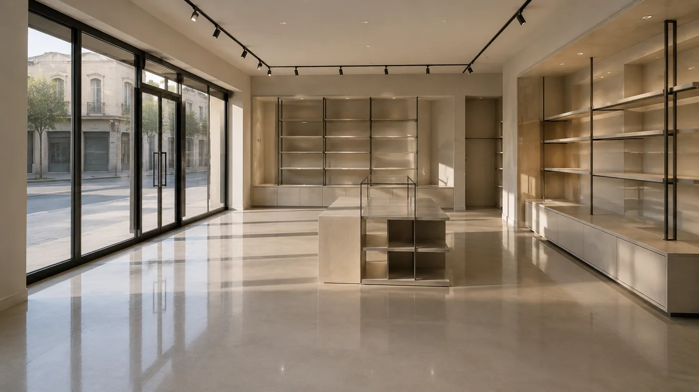
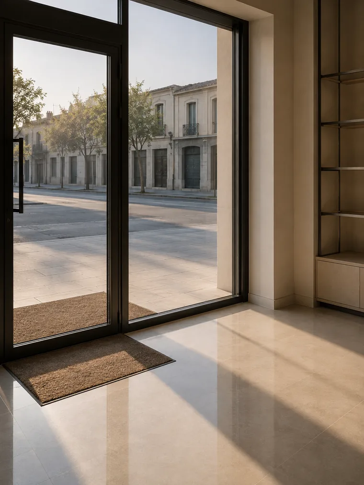
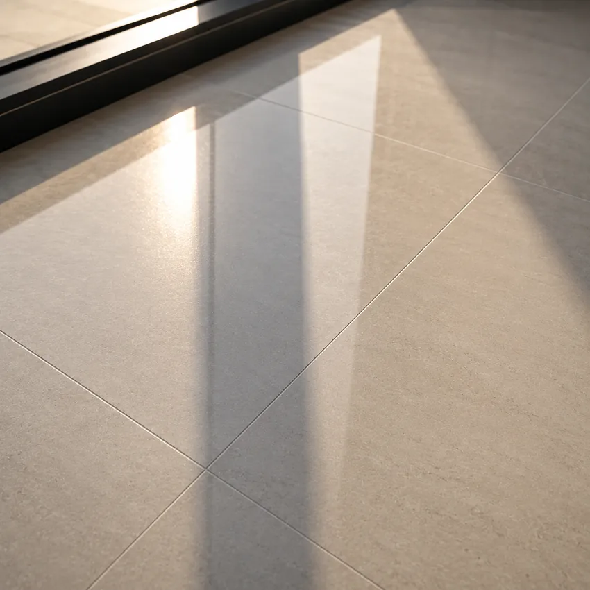

Avant l'ouverture
Le passage le plus fréquent. Le local est rendu prêt à recevoir, vitrine comprise, avant que le premier client ne pousse la porte.

Votre commerce est jugé depuis la rue, avant même qu'on pousse la porte.

La devanture
Un client se fait un avis sur un commerce avant d'y entrer. Cet avis se joue sur une vitrine, un seuil et trois mètres de sol. Ce sont aussi les surfaces les plus sollicitées et les plus difficiles à tenir en saison.
Vue de la rue à contre-jour, une vitre passable devient une vitre sale. C'est la seule surface du commerce que le client juge avant d'entrer.
Point de concentration du sable et de l'eau. Un seuil négligé recontamine le sol de vente à chaque passage.
Les trois premiers mètres reçoivent autant de passage que tout le reste du magasin réuni. Ils s'usent en premier et se voient depuis la rue.
Sur les poignées, les vitrines de comptoir et les présentoirs vitrés. Invisible de face, évident en lumière rasante.
Les créneaux
Un commerce ne se nettoie pas devant le client. Quatre créneaux sont possibles, et c'est votre activité qui décide, pas notre planning.
Le passage le plus fréquent. Le local est rendu prêt à recevoir, vitrine comprise, avant que le premier client ne pousse la porte.
Sur les commerces qui ferment entre midi et deux, une passe courte suffit à reprendre le sol de la zone d'entrée en pleine saison.
Le créneau le plus confortable pour les interventions longues, et le seul possible pour les commerces à horaires continus.
La fenêtre des interventions lourdes : traitement des sols, vitrerie en hauteur, remise à niveau après une semaine d'affluence.
La saison
Sur le Golfe, un commerce encaisse en quatre mois la fréquentation d'une année entière. À cela s'ajoute le sable rapporté des plages, qui agit comme un abrasif sur le sol de la zone d'entrée à chaque passage.
Un contrat qui prévoit le même rythme sur douze mois est mal conçu : trop cher l'hiver, insuffisant l'été. La fréquence se module, et cette modulation figure au contrat.
Hors saison Épaules Pleine saison
Ce que le client voit depuis la rue décide s'il pousse la porte.
Principe de travail · SNTM SAPAvant d'ouvrir
Que ce soit nous ou vous qui passiez, ce sont ces huit points qu'un client remarque. Servez-vous-en comme grille de contrôle, y compris pour nous juger.
Demander un devis
Le sol
Un sol de commerce reçoit le sable, l'eau, le sel et le passage de toute une saison. S'il est en pierre naturelle, en terre cuite ou en carreaux de ciment, un produit d'entretien inadapté l'abîme durablement, et la remise en état coûte plusieurs fois le prix de l'entretien.
Le matériau du sol est donc identifié à la visite, avant le devis. C'est lui qui commande les produits, pas l'inverse.
Voir le traitement des sols à Saint-TropezQuestions fréquentes
Oui, c'est le cas le plus fréquent. Le créneau se fixe au contrat, en fonction de votre heure d'ouverture et du temps réel nécessaire. Il figure par écrit, au même titre que les zones traitées et la fréquence.
Elle le doit. Sur le Golfe, un commerce encaisse entre juin et septembre une fréquentation sans commune mesure avec le reste de l'année. Un contrat qui prévoit le même rythme sur douze mois est soit trop cher l'hiver, soit insuffisant l'été.
Elle fait partie du périmètre à définir explicitement. Le vitrage intérieur, l'extérieur accessible depuis le sol, les encadrements et les poignées ne relèvent pas des mêmes gestes ni du même temps : ils se chiffrent séparément.
Il change tout. Un marbre, un travertin ou une terre cuite ne se lavent pas au même produit qu'un grès cérame, et un produit inadapté les abîme durablement. Le matériau est identifié à la visite, avant le devis.
Cela dépend de la surface, du matériau du sol, du nombre de sanitaires et de la fréquentation, bien plus que du seul mètre carré. La durée s'établit après visite, pas au téléphone.
Oui. Nous couvrons l'ensemble du Golfe, dont Ramatuelle, Gassin, Grimaud, Cogolin, Sainte-Maxime, Cavalaire-sur-Mer et La Croix-Valmer, ainsi que d'autres communes du Var selon la nature du contrat.
Aller plus loin
Ce que recouvre un contrat d'entretien, zone par zone.
Huit matières, huit comportements, et ce que chacune demande.
Avant l'ouverture d'un local neuf ou après une rénovation.
Des chantiers menés dans le Golfe de Saint-Tropez.
Donnez-nous la surface, le matériau du sol, vos horaires d'ouverture et votre jour de fermeture. Nous venons voir avant de chiffrer.